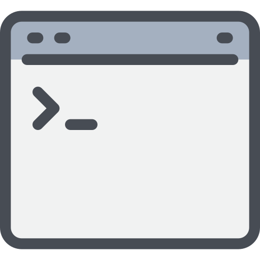
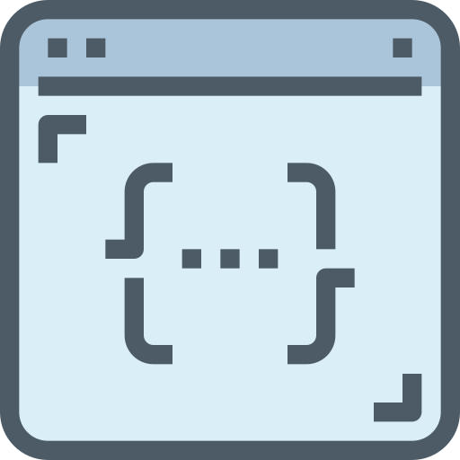
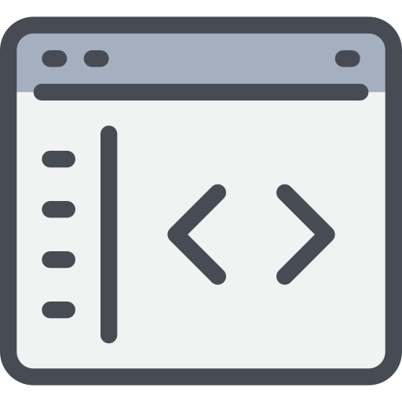

Documentation 100% fait main de mes résolutions de challenges.
L'objectif est de consolider mes acquis et de fournir des méthodes d'analyse et d'attaque réutilisables.

Cette série d’épreuves vous confronte aux vulnérabilités liées à des faiblesses d’environnement, de configuration ou encore à des erreurs de développement dans des langages de script ou de programmation.
... Write-UpsCes challenges permettent de comprendre le sens du terme « langage compilé ». Ce sont des fichiers binaires à décortiquer pour aller chercher les instructions bas niveau permettant de répondre au problème posé.
... Write-UpsCes challenges mettent à l’épreuve vos techniques d’investigations numériques en analysant des traces mémoire, des fichiers de journalisation, des captures réseaux...
... Write-Ups
Automatisez des tâches de plus en plus complexes pour valider ces challenges en moins de quelques secondes.
... Write-UpsVous allez vous retrouver dans des environnements complets sur des thèmes divers et variés. À vous d’en comprendre le fonctionnement, d’identifier les faiblesses et de cibler les vulnérabilités à exploiter.
... Write-UpsSi la cryptographie est l’art du secret, la stéganographie est l’art de la dissimulation : l’objet de la stéganographie n’est pas de rendre un message inintelligible aux personnes non autorisées mais de le faire passer inaperçu.
... Write-Ups
Apprenez à exploiter les failles des applications web pour impacter leurs utilisateurs ou contourner des mécanismes de sécurité côté client.
... Write-Ups